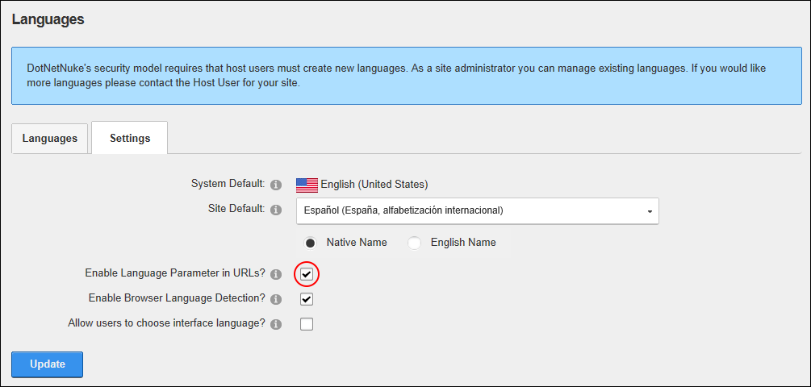

How to enable or disable users from selecting a different language for the DNN application (e.g. on the Control Panel) than the site content. DNN Platform users (including anonymous users) must be granted Edit Module permissions. Evoq Content users (including anonymous users) must be granted Edit Content permissions.
